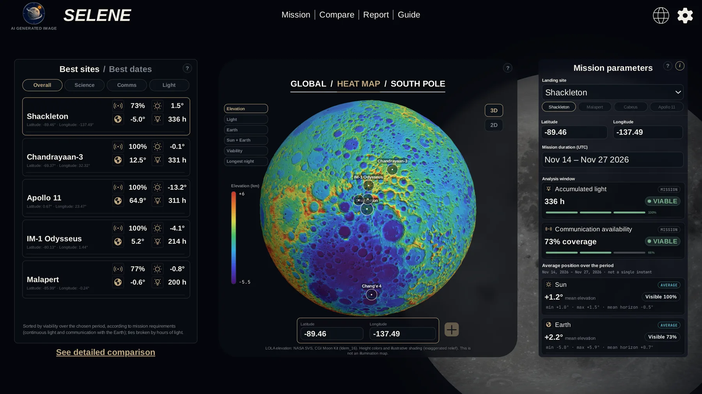
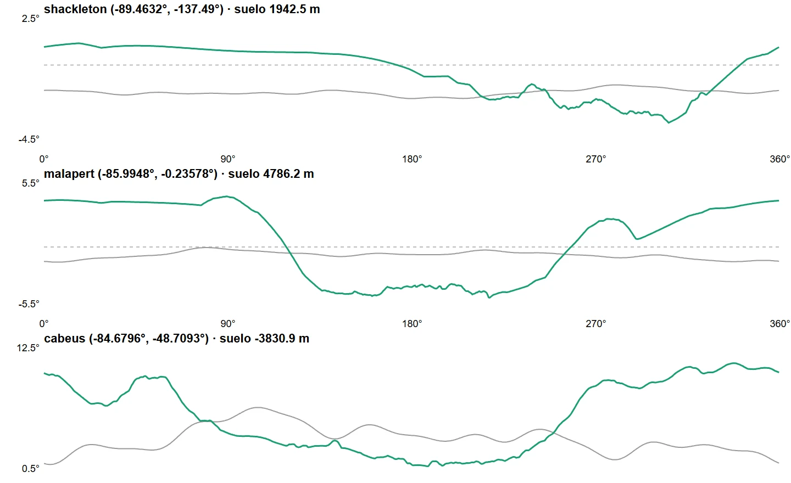
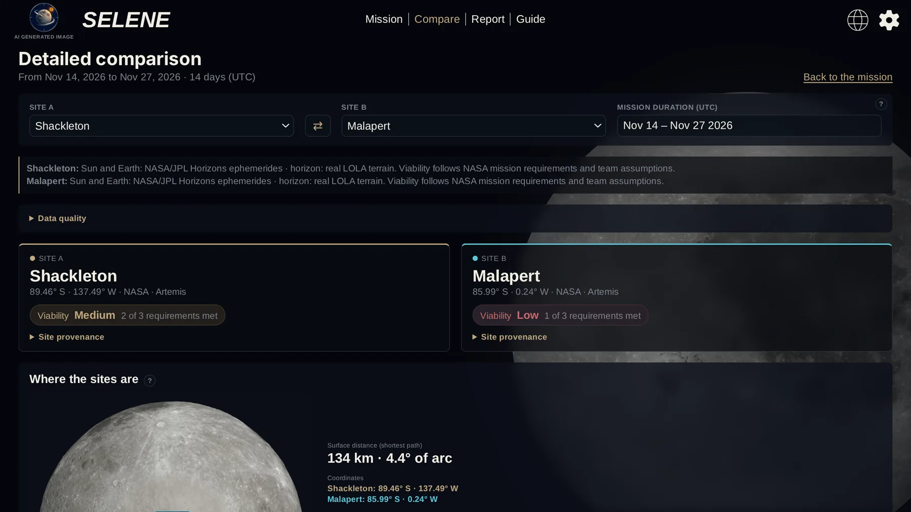
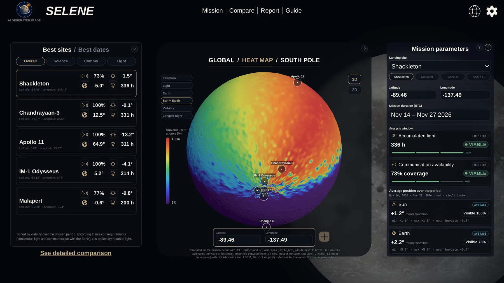

SELENE
Un explorador web para elegir dónde y cuándo alunizar en el polo sur de la Luna, según cuánta luz solar hay y cuándo se ve la Tierra.
- Contexto
- NASA Space Apps Challenge 2026, sede Salto/Paysandú
- Equipo
- Hubble27, seis integrantes
- Mi parte
- Motor de cálculo, datos de NASA, validaciones e integración continua
- Enlaces
- Demo en vivo
Código

El problema
El desafío 4 de Space Apps 2026 pedía crear un explorador de misiones lunares. Elegimos enfocarnos en el polo sur, donde apuntan las próximas misiones. Allí el Sol apenas se levanta sobre el horizonte, y unos pocos metros de relieve deciden si un módulo tiene energía o queda a oscuras.
Para comparar sitios hacen falta dos respuestas para cada hora del período de la misión: si hay luz solar para generar energía y si se ve la Tierra para comunicarse de forma directa.
SELENE es una creación colectiva del equipo Hubble27. En esta página describo solo mis aportes, que se pueden comprobar en las pull requests del repositorio.
Qué hice yo
Mi trabajo se concentró en la parte científica del sistema: reemplazar las aproximaciones iniciales por datos reales de NASA y comprobar que los resultados tuvieran sentido físico.
- Efemérides de JPL Horizons. Integré series horarias reproducibles de la posición del Sol y de la Tierra vistas desde cada sitio, y las conecté al cálculo.
- Horizonte real a partir de LOLA. Calculé el horizonte topográfico de cada sitio usando los modelos de elevación del altímetro láser de la sonda LRO, primero en el polo sur y después en Chang’e 4 y Apollo 11.
- Puntos elegidos por el usuario. Datos reales para cualquier punto del mapa, no solo para los sitios cargados de antemano.
- Una sola regla de visibilidad. Unifiqué el criterio para decidir si el Sol y la Tierra están visibles, teniendo en cuenta el tamaño aparente de su disco, para que el mapa y los escenarios den el mismo resultado.
- Motor del mapa de calor. El cálculo del mapa de luz y comunicación del polo sur con datos reales.
- Datos de los sitios. Validé coordenadas y procedencia, y corregí la ubicación de Shackleton según la tabla oficial de NASA.
- Pruebas e integración continua. Separé las validaciones contra datos reales de las pruebas unitarias y configuré GitHub Actions para que todo corra en cada pull request.
Cada uno de estos cambios quedó documentado en el registro de decisiones del proyecto, con el contexto, la solución y las alternativas descartadas.
La evidencia: mis pull requests integradas
- #40Efemérides reproducibles de JPL Horizons
- #39Preparación del producto polar LOLA
- #50Horizonte topográfico real desde LOLA
- #54Horizonte LOLA dentro del cálculo
- #56Efemérides de Horizons dentro del cálculo
- #60Datos reales para los puntos propios del mapa
- #64Política única de visibilidad del Sol y la Tierra
- #65Validaciones científicas, controles físicos y CI
- #66Motor del mapa de calor con datos reales
- #96Horizonte LOLA para Chang’e 4 y Apollo 11
- +5Datos de los sitios, documentación y correcciones: ver las 15
Cómo funciona el cálculo
Para cada sitio e instante, el motor compara la altura del Sol y de la Tierra con la altura del horizonte en esa misma dirección. Si el disco queda por encima del relieve, cuenta como visible.
| Fuente | Qué aporta | Dónde se usa |
|---|---|---|
| JPL Horizons | Dirección y tamaño aparente del Sol y de la Tierra, hora por hora | Todos los cálculos de luz y comunicación |
| LOLA (LRO) | Relieve: altura del horizonte en cada dirección | Horizonte de cada sitio y atlas del mapa de calor |
| Motor de visibilidad | Una sola regla: qué parte del disco queda sobre el horizonte | Escenarios, ranking de fechas y mapa de calor |

El gráfico muestra por qué valía la pena: en los tres sitios el horizonte real se aparta varios grados de la aproximación, y en el polo sur unos pocos grados alcanzan para tapar el Sol.
Cómo lo validé
Un cálculo con datos reales puede estar mal y parecer correcto. Por eso escribí controles físicos: propiedades conocidas de la Luna que el resultado tiene que cumplir. Si un cambio las rompe, la integración continua lo frena.
| Control | Esperado | Medido |
|---|---|---|
| Altura máxima del Sol en Shackleton | 1,74° a 2,18° | 2,05° |
| Altura máxima del Sol en Malapert | 5,21° a 5,65° | 5,53° |
| Mes sinódico medio en Apollo 11 | 29,5306 ± 0,02 d | 29,5336 d |
| Tierra desde Apollo 11 (cara visible) | siempre > 50° | 58,0° a 73,7° |
| Tierra desde Chang’e 4 (cara oculta) | siempre < −30° | −51,0° a −37,7° |
| Sol en Cabeus, cráter en sombra permanente | 0 % cada mes | 0 % en 12 meses |
El límite para la altura del Sol sale de la geometría: la colatitud del sitio más la oblicuidad del ecuador lunar (1,543°). Las tolerancias de cada control están documentadas junto a su justificación.
Resultado
El equipo entregó SELENE el 15 de noviembre de 2026, publicada en Vercel y con integración continua en verde. En la verificación final, la batería del proyecto tenía 226 pruebas: 223 pasaban, ninguna fallaba y 3 se omitían porque requieren descargar los modelos LOLA completos.

Probalo acá
Esta es la aplicación real publicada, no una simulación. Se carga solo si la pedís, porque incluye la Luna en 3D y datos pesados.

En el celular conviene abrirla en una pestaña nueva.